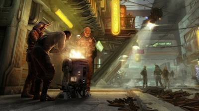
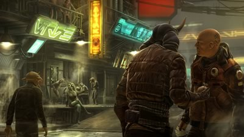
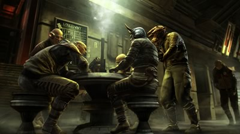

The Empire Strikes Back
by



Dear reader,
What is a quarterly, exactly? If you were to measure it by the time it took us to release a new issue, you can say that a quarterly is equal to nearly two LucasArts presidencies. That would be correct; not only the refreshing era of Darrell Rodriguez has ended, but also the quiet presidency of his successor, Paul Meegan. These events are at the same time surprising and expected, and it is that unusual contradiction which seems to accurately define the latest years of LucasArts.
Not much is known of what Paul Meegan did, yet under his wing Star Wars 1313 was recently announced. A “third person action adventure game”, a Star Wars game that intends to be more mature in tone than most of their other recent games. On my first draft of this letter, I wrote the following: “A truly mature and adult oriented Star Wars universe would be an interesting thing to explore, even if it departs a bit from the innocence of the original movies. If we are going to be presented with a truly gritty, lawless subterranean world that level 1313 of Coruscant is supposed to be, then I would expect to see allusions to drugs, slavery, corruption, abuse, gambling and what not, blurring the line between right and wrong (taking it beyond the good natured bad guy, Han Solo type of character), presenting a multi layered and complex reality. Hopefully, Star Wars 1313 will explore some of these notions in an interesting way. But in all honesty, I doubt it.” However, shortly after I wrote that, some concept art images were released that truly surprised and impressed me. This leads me to believe that the things this game needs are being seriously considered, and that can only be a good thing.
And that's not the only news on the Lucas front: wonderful film producer Kathleen Kennedy is now the co-chair of LucasFilm as George transitions to his retirement. Mrs. Kennedy is one very talented producer, whose work I've been admiring for years. She produced most of the Spielberg films, as well as many other well known titles throughout a lengthy career. In her extremely competent hands, the overall future for the company seems bright, and hopefully she will have a say on who the next LucasArts president will be.
There is something even more important that has happened ever since our first issue came out. Something historic. As many of you know, Double Fine (the company of former LucasArts luminary Tim Schafer) created a Kickstarter early this year, to raise funds for an adventure game (of which I'm a proud backer). It should be noted that in a move that could be defined as treacherous and amazing in equal measure, it was later revealed that the game Ron Gilbert had been designing at Double Fine (The Cave, an upcoming game published by SEGA), was also an adventure game (albeit not a 2D point-and-click one). The Double Fine Kickstarter collected the second (recently beaten by the amazingly successful OUYA) largest amount of money (over 3 million dollars), the largest quantity of backers (over 87 thousand), and it holds the record for getting to a million dollars in the shortest amount of time (23 hours). And yet these are not the most important accomplishments of that endeavor. Not only did it validate the people's interest in adventure games to the public eye, but most significantly it sparked a wave of change. Following on the success of Tim Schafer's campaign, other well known game designers have used Kickstarter in an attempt to finance projects that no publisher would have funded. Al Lowe, creator of Leisure Suit Larry, raised 650 thousand dollars to remake the original game and release it in a variety of platforms. Brian Fargo, producer of memorable RPGs like Fallout (1 and 2) and Baldur's Gate, amassed 2.9 million dollars for a sequel to his 1988 RPG, Wasteland. Jane Jensen, creator of the Gabriel Knight games and King's Quest VI, got over 430 thousand dollars to make a new adventure game called Moebius under her new studio, Pinkerton Road, dedicated to adventure games. These are only some of the biggest examples, but there are many more (including several more adventure games, and even the Idle Thumbs podcast). Change is in the air, and the democratization of production is a reality that's here to stay.
Let us now talk about what's important, shall we? The magnificent issue of The Thrillville Quarterly that is about to explode in your face in all its greatness. The first thing you'll have noticed is the delightful cover (which, in true adventure game fashion, features an easter egg), illustrated by the wonderful artist Jón Kristinsson. He has a terrific Tumblr full of endearing adventure game tributes. As for the articles available for your reading pleasure, we have the first of a two-part story (featuring some poor quickly-made doodles by yours truly, meant to make the story, in comparison, even better) by the talented writer (and also our copy editor) Jan Jacob Mekes. In it, you'll find an intriguing adventure featuring two suspiciously familiar characters and a plethora of references. From our vault of unreleased material, we finally reveal a very peculiar interview with Dave Grossman, which Jan conducted in 2010. We also have a new contributor, the astute Daniel Wishart, who writes about the Double Fine Adventure and Tim Schafer. Gabriel Schenk takes the opportunity to reflect about imagination and Escape from Monkey Island. As for myself, I chose to ponder on the mystery that is Paul Meegan's presidency. That comprises our entire team of contributors, of which all but me are located in Europe (I'm in Argentina, them in Denmark, Netherlands and England). May this issue make you choke with joy and satisfaction, and stimulate your brain. Be sure to follow us on Twitter or Facebook to be occasionally reminded of our existence. I'll be seeing you, dear reader, before the end of the year with the next issue, this time respecting the prevalent definition of “quarterly”.
Yours faithfully,
— The Editor